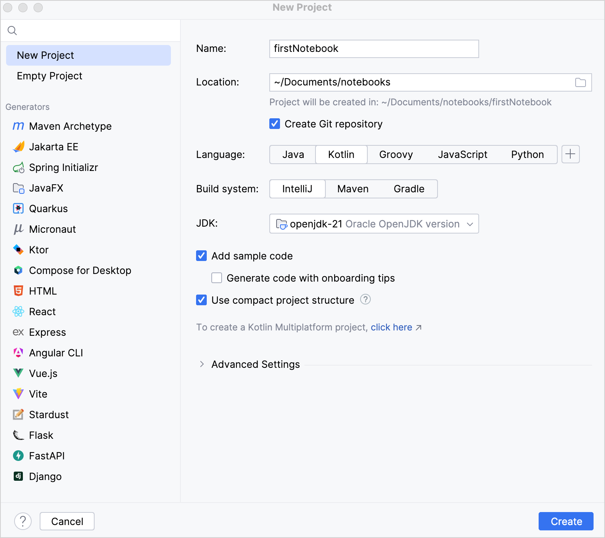
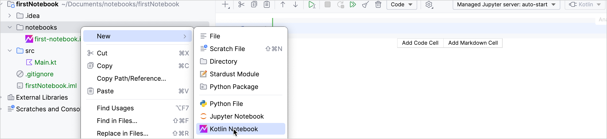

Create your first Kotlin Notebook
Here, you will learn how to create your first Kotlin Notebook , perform simple operations, and run code cells.
Create an empty project
-
In IntelliJ IDEA, select File | New | Project .
-
In the panel on the left, select New Project .
-
Name the new project and change its location if necessary.
-
From the Language list, select Kotlin .
 -
Select the IntelliJ build system.
-
From the JDK list , select the JDK that you want to use in your project.
-
Enable the Add sample code option to create a file with a sample
"Hello World!"application. -
Click Create .
Create a Kotlin Notebook
-
To create a new notebook, select File | New | Kotlin Notebook , or right-click on a folder and select New | Kotlin Notebook .
 -
Set the name of the new notebook, for example, first-notebook , and press Enter . A new tab with a Kotlin Notebook first-notebook.ipynb will open.
-
In the open tab, type the following code in the code cell:
println("Hello, this is a Kotlin Notebook!") -
To run a code cell, click the Run Cell and Select Below button or press Shift + Return .
-
Add a markdown cell by clicking on the Add Markdown Cell button.
-
Type
# Example operationsin the cell, and run it the same way you run code cells to render it. -
In a new code cell, type
10 + 10and run it. -
Define a variable in a code cell. For example,
val a = 100. -
Create a new code cell and add
println(a * a). -
Run all code and markdown cells in the notebook using the Run All
 button.
button.

Congratulations! You have just created your first Kotlin Notebook.
Create a scratch Kotlin Notebook
Starting from IntelliJ IDEA 2024.1.1, you can also create a Kotlin Notebook as a scratch file.
Scratch files allow you to test small pieces of code without creating a new project or modifying an existing one.
To create a scratch Kotlin Notebook:
-
Click File | New | Scratch File .
-
Select Kotlin Notebook from the New Scratch File list.

Next step
In the next part of the tutorial, you will learn how to add dependencies to a Kotlin Notebook.